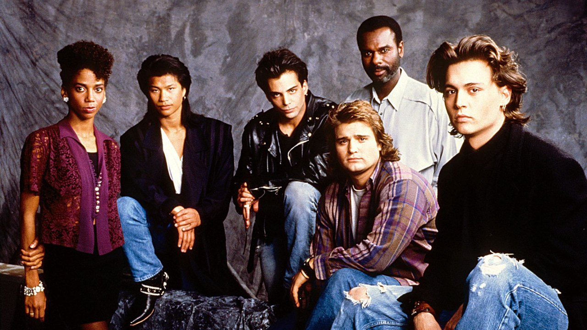
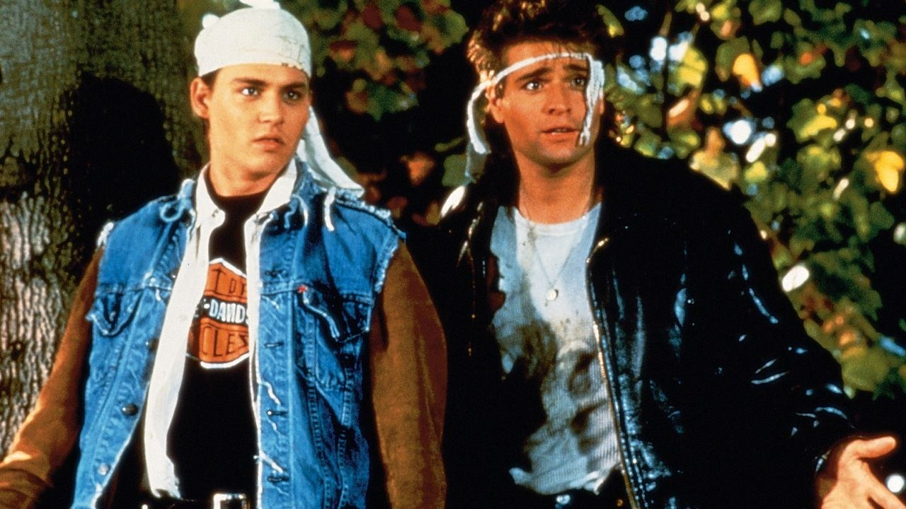

Sommaire8 sections
Huit ans. Dehors, la nuit tombe tôt, le cartable est jeté dans l'entrée, et le salon de mes grands-parents sent le soir qui commence. Mes parents rentreront tard, et jusqu'à leur retour, la soirée m'appartient.
Je m'installe. TF1 s'allume, le générique démarre, et tout ce qui pèse sur un enfant s'efface d'un coup. Eux, ce sont des policiers qui n'en ont pas l'air. Des jeunes qui poussent la porte des écoles, s'assoient au fond de la classe et y font respecter la loi, sans que personne ne se doute de rien.
Je ne le sais pas encore, mais ce rendez-vous du soir, ce salon et cette brigade pas comme les autres, je les emporterai avec moi toute ma vie. Voici 21 Jump Street.

L'équipe de Jump Street : Holly Robinson, Dustin Nguyen, Richard Grieco, Peter DeLuise, Steven Williams et Johnny Depp (de gauche à droite)
21 Jump Street est une série policière américaine créée par Patrick Hasburgh et Stephen J. Cannell, diffusée sur Fox du 12 avril 1987 au 27 avril 1991. Elle compte cinq saisons et 103 épisodes : quatre sur Fox, puis une cinquième en syndication.
Le principe tient en une phrase : une unité de jeunes policiers, recrutés pour leur allure d'adolescents, s'infiltre dans les lycées, les campus et les milieux étudiants. Leur quartier général est une église désaffectée, et la série s'est d'abord appelée Jump Street Chapel, avant que Fox demande un autre titre. L'action se déroule dans la ville fictive de Metropolis, mais le tournage a lieu surtout à Vancouver, en Colombie-Britannique.
Au centre de la brigade : Johnny Depp (Tom Hanson), Holly Robinson (Judy Hoffs), Peter DeLuise (Doug Penhall) et Dustin Nguyen (H.T. Ioki). Frederic Forrest est le capitaine Richard Jenko, remplacé en cours de saison 1 par Steven Williams, le capitaine Adam Fuller. Le générique est chanté par Holly Robinson, sur une musique de Liam Sternberg.
En France, la série est diffusée dès le 3 janvier 1990, et TF1 figure parmi les chaînes qui l'ont programmée.
Fox est une chaîne toute jeune quand 21 Jump Street arrive à l'antenne, le 12 avril 1987, en même temps que Mariés, deux enfants (Married... with Children) et The Tracey Ullman Show. La série est conçue pour séduire un public plus jeune, et elle devient le premier vrai succès de la chaîne. Elle est aussi la première de ses séries à gagner son créneau face à l'un des trois grands réseaux.
Patrick Hasburgh et Stephen J. Cannell la produisent avec leurs deux sociétés, et Cannell en garde tous les droits. Le premier titre, Jump Street Chapel, est abandonné à la demande de Fox, qui craint qu'il fasse croire à une émission religieuse.
Pour le rôle de Tom Hanson, c'est d'abord Jeff Yagher qui est engagé. Après le tournage du pilote original, il est remplacé, et ses scènes sont retournées avec Johnny Depp, payé 45 000 dollars par épisode. Depp supporte mal son statut d'idole des adolescents, mais il honore son contrat jusqu'à la fin de la saison 4.
Le tournage a lieu à Vancouver, alors que l'action est censée se passer à Metropolis, une ville fictive. La série compte parmi les premières grosses productions tournées là-bas, et participe à y installer une industrie du cinéma.
La série prend aussi des sujets de société à bras-le-corps : alcoolisme, crimes haineux, violence des gangs, drogue, homophobie, sida, maltraitance. Chaque problème trouve en général sa conclusion dans l'heure, avec une morale implicite, et certains épisodes sont suivis d'un message de prévention porté par des acteurs de la série.
Côté distribution, Steven Williams reprend en cours de saison 1 le rôle de capitaine laissé par Frederic Forrest. Depp et Dustin Nguyen partent à la fin de la saison 4, et la série introduit de nouveaux policiers plus jeunes, car l'équipe d'origine devient difficile à faire passer pour des lycéens. Fox arrête la série après la saison 4, car l'audience est tombée sous le seuil fixé, selon le commentaire de Peter DeLuise sur le DVD de la saison 5, qui passe en syndication d'octobre 1990 à avril 1991. Au total : 13, 22, 20, 26 et 22 épisodes, soit 103.

Johnny Depp et Peter DeLuise dans 21 Jump Street
Une série d'infiltration, dont chaque épisode est une mission. Une brigade de jeunes policiers, recrutés pour leur allure d'adolescents, reçoit une affaire : trafic de drogue dans un lycée, violence dans une bande, un camarade en danger. Ils s'y glissent sous une fausse identité, en élèves ou en étudiants, avec le blouson, le sac, les mêmes cours que les autres.
Autour d'eux, la machine est rodée. Le quartier général, dans une église désaffectée, sert de point de rendez-vous. C'est là que le capitaine distribue les affaires, puis fait le point au retour. Les épisodes durent entre 45 et 48 minutes, et le problème trouve en général sa solution avant le générique de fin.
Ce qui fait tenir la série, c'est le groupe. Tom Hanson, le plus jeune et le plus exposé, Judy Hoffs, Doug Penhall et H.T. Ioki n'ont pas les mêmes méthodes ni le même tempérament, et chacun apporte son regard sur ce qu'il découvre derrière les murs de l'école. Les épisodes s'attaquent à des sujets sérieux, mais ils laissent aussi de la place aux scènes plus légères, à l'humour de bande, aux déguisements et aux fausses identités.
Le regard adulte dans le monde des ados. 21 Jump Street repose sur une idée simple et efficace : la loi, glissée dans le monde des adolescents. Les policiers ont l'âge des élèves, mais pas leur point de vue, et ce décalage nourrit toute la série, entre le jeu d'infiltration et ce que ces jeunes agents découvrent des problèmes de leur génération.
Une série à message. La série prend ces problèmes au sérieux. Elle traite l'alcoolisme, la drogue, la violence des gangs, les crimes haineux, l'homophobie, le sida, la maltraitance. Chaque épisode referme son sujet dans l'heure, souvent avec une morale implicite, et certains se prolongent par un message de prévention porté par les acteurs eux-mêmes. C'est une série policière, mais aussi une série à message, une manière de parler aux jeunes spectateurs sans les prendre de haut.
Une série pour Fox. Elle sert la stratégie d'une chaîne jeune qui cherche un public jeune. Le casting joue le même jeu, et c'est aussi sa limite : à mesure que les saisons passent, l'équipe d'origine devient difficile à faire passer pour des lycéens, et la série introduit des policiers plus jeunes. Le concept porte en lui sa date de péremption.
Un tremplin. Johnny Depp en tire une notoriété nationale d'idole d'adolescents qu'il supporte mal, et la liste des invités de passage donne le vertige avec le recul : Brad Pitt, Vince Vaughn, Christina Applegate, Jason Priestley, Bridget Fonda, Josh Brolin, Ed O'Neill, entre autres. La série a prolongé sa vie à sa manière, avec le spin-off Booker (1989-1990), puis, des décennies plus tard, deux films avec Jonah Hill et Channing Tatum (2012 et 2014). Dans le premier, Johnny Depp, Holly Robinson et Peter DeLuise font une apparition. Dans le second, ce sont Richard Grieco et Dustin Nguyen.
Johnny Depp et Holly Robinson dans 21 Jump Street
Éclipsée plutôt qu'effacée. 21 Jump Street n'a pas disparu, elle s'est effacée derrière ce qu'elle a produit. Quand on la cite aujourd'hui, c'est le plus souvent pour Johnny Depp, devenu l'une des plus grandes stars de sa génération, ou pour les deux films avec Jonah Hill et Channing Tatum, sortis en 2012 et 2014. Pour beaucoup de spectateurs, le nom « Jump Street » évoque d'abord la comédie, bien avant la série d'origine.
Un noyau qui s'en va. Depp et Dustin Nguyen partent à la fin de la saison 4, Fox arrête la série après cette saison à cause d'une audience tombée sous le seuil fixé, et la cinquième saison, tournée sans eux, ne passe plus que sur des chaînes locales en syndication. Les visages sur lesquels s'était construite la série ne sont plus là pour la porter.
Un concept daté. Des policiers qui ressemblent à des lycéens, c'est une idée qui vieillit en même temps que les acteurs, et qui est ancrée dans les années 80 : les blousons, les coupes, les modes, les problèmes de société d'une époque.
Pourtant accessible. L'intégrale existe en DVD, et la série est proposée en streaming gratuit sur TF1+, la chaîne qui l'a diffusée en France.
Pour son regard sur les ados. C'est une série qui parlait aux adolescents sans les prendre de haut. Alcool, drogue, gangs, homophobie, sida, maltraitance : elle aborde en une heure des sujets sérieux, et ses épisodes se terminent parfois par un message porté par les acteurs eux-mêmes.
Pour les visages. Johnny Depp y devient une idole d'adolescents, alors qu'il supportait mal ce statut. Autour de lui, Holly Robinson, Peter DeLuise et Dustin Nguyen forment un groupe soudé, et les épisodes accueillent de futurs noms connus, parmi lesquels Brad Pitt, Vince Vaughn, Christina Applegate et Jason Priestley.
Parce qu'elle est facile à retrouver. L'intégrale est disponible en DVD, et la série est proposée en streaming sur TF1+, la chaîne qui l'avait diffusée en France.
Pour les souvenirs. Pour ceux qui ont connu la série enfants, c'est aussi une manière de retrouver le salon, le soir, le générique. Pour les autres, c'est l'occasion de découvrir d'où vient le nom « Jump Street », celui que les deux films ont rendu célèbre.
21 Jump Street a duré quatre saisons sur Fox, puis une dernière en syndication. Elle a lancé la chaîne, révélé Johnny Depp au grand public, et donné naissance à Booker puis, bien plus tard, à deux films. Elle n'a jamais vraiment quitté ceux qui l'ont suivie.
Pour moi, elle reste celle du salon de mes grands-parents, le soir après l'école, quand mes parents rentraient tard. Une brigade pas comme les autres, qui poussait la porte des écoles pour y faire respecter la loi, et un gamin de huit ans qui ne manquait pas le rendez-vous.
Rembobinez la cassette. La brigade de Jump Street vous attend.
Titre original
21 Jump Street
Pays
États-Unis
Genre
Policier
Diffusion
Fox, 1987–1991 (5 saisons, 103 épisodes)
Créateurs
Patrick Hasburgh · Stephen J. Cannell
Tournage
Vancouver (Colombie-Britannique)
Musique
Liam Sternberg (thème)
Fil conducteur
Séries TV cultes — EP. 16
SOMEDAY — SÉRIES EP. 16